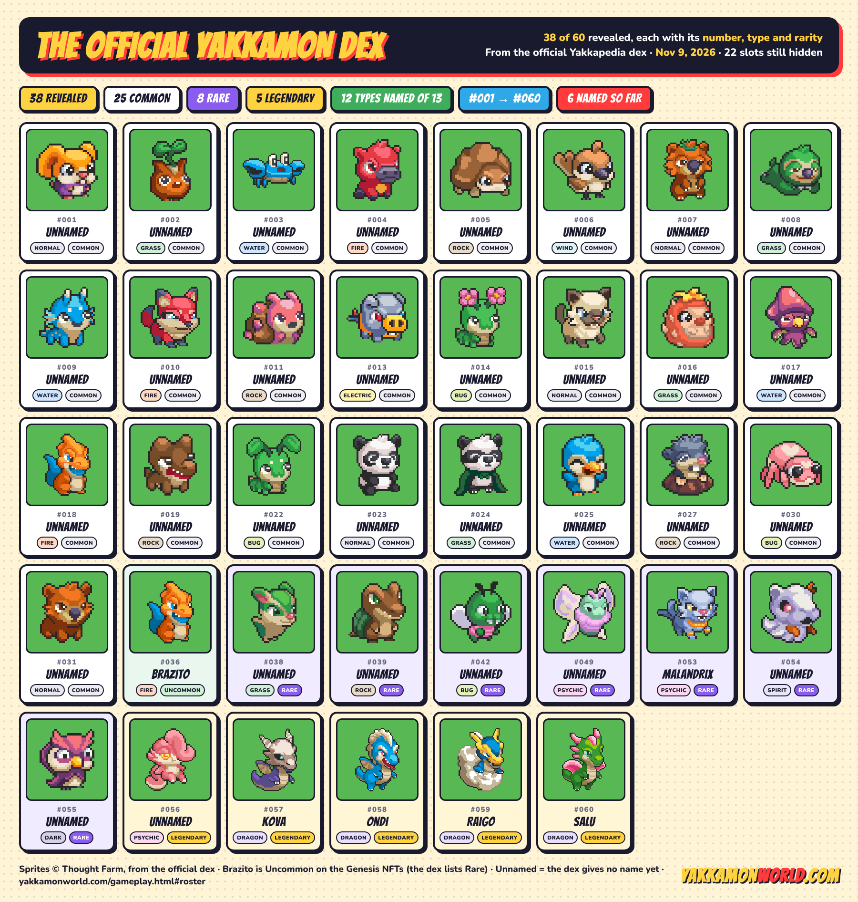
For three months the roster was a picture. The team’s sheet showed portraits — eighteen in August, twenty-six by September — and this site could say what the creatures looked like and almost nothing about what they were. Six got names, types and rarities on October 14, because they were in the Genesis eggs. The other twenty stayed portraits.
The official Yakkapedia dex changes that. It lists 38 Yakkamon, each with a dex number, a type and a rarity, and the numbers run from #001 to #060 with gaps. That is twelve more creatures than the last sheet, a type for every one of them, and — because the gaps follow a pattern — a fairly confident picture of how big the finished roster is. Names are still missing for 32 of the 38; the six Genesis Yakkamon are the only ones the dex names.
By the numbers
38 revealed
Dex entries with a sprite, a type and a rarity. The previous sheet showed 26 portraits.
25 · 8 · 5
Commons, Rares and Legendaries, by the dex’s labels. Brazito counts among the Rares there and among the Uncommons here.
12 types named
Normal, Grass, Water, Fire, Rock, Wind, Electric, Bug, Psychic, Spirit, Dark, Dragon. The team has said thirteen, so one is still unseen.
#060, with 22 gaps
Numbers run to sixty. Twenty-two slots have no entry yet — and the gaps are not random (see below).
The dex
Dex order, with the dex number, the name where one exists, the type and the rarity. Cards are tinted by rarity: cream for Legendary, lilac for Rare, green for Brazito’s Uncommon. The six named Yakkamon link out to their Genesis cards.
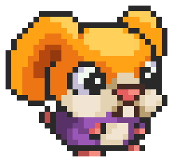
#001Unnamed
NormalCommon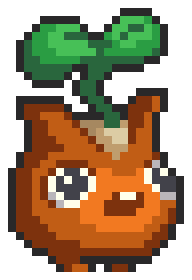
#002Unnamed
GrassCommon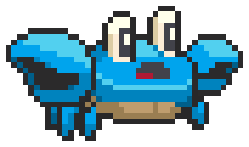
#003Unnamed
WaterCommon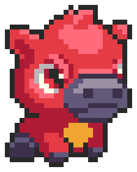
#004Unnamed
FireCommon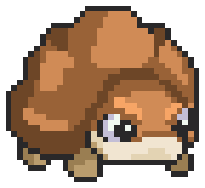
#005Unnamed
RockCommon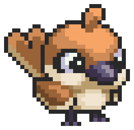
#006Unnamed
WindCommon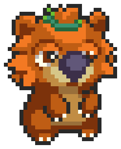
#007Unnamed
NormalCommon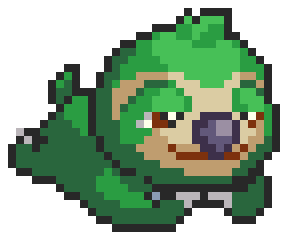
#008Unnamed
GrassCommon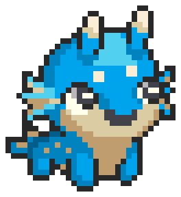
#009Unnamed
WaterCommon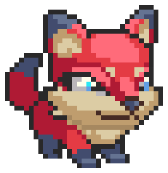
#010Unnamed
FireCommon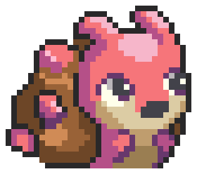
#011Unnamed
RockCommon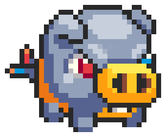
#013Unnamed
ElectricCommon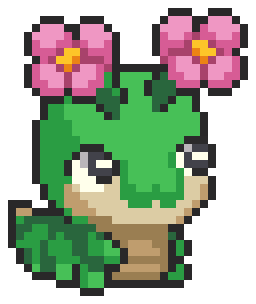
#014Unnamed
BugCommon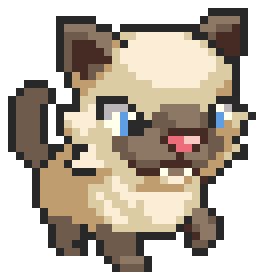
#015Unnamed
NormalCommon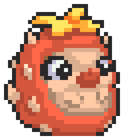
#016Unnamed
GrassCommon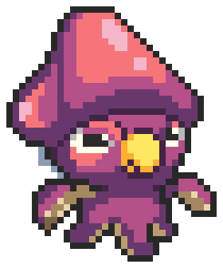
#017Unnamed
WaterCommon #018
#018Unnamed
FireCommon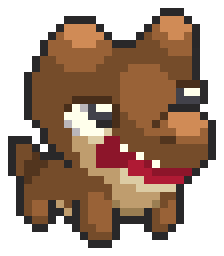
#019Unnamed
RockCommon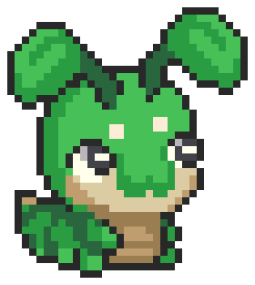
#022Unnamed
BugCommon- #023
Unnamed
NormalCommon - #024
Unnamed
GrassCommon 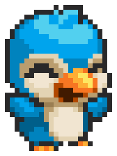
#025Unnamed
WaterCommon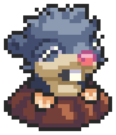
#027Unnamed
RockCommon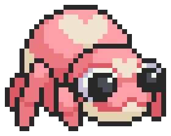
#030Unnamed
BugCommon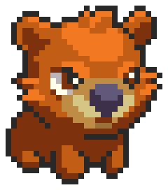
#031Unnamed
NormalCommon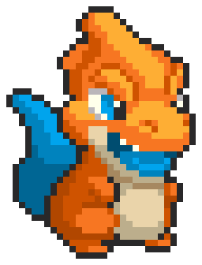
#036Brazito
FireUncommon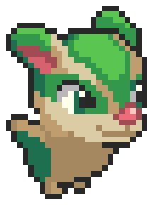
#038Unnamed
GrassRare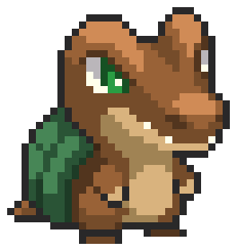
#039Unnamed
RockRare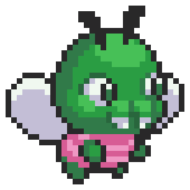
#042Unnamed
BugRare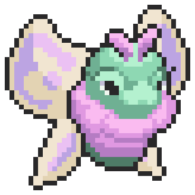
#049Unnamed
PsychicRare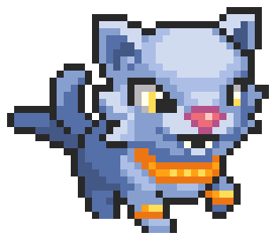
#053Malandrix
PsychicRare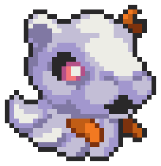
#054Unnamed
SpiritRare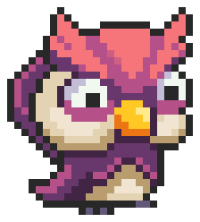
#055Unnamed
DarkRare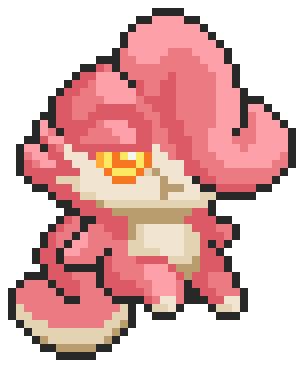
#056Unnamed
PsychicLegendary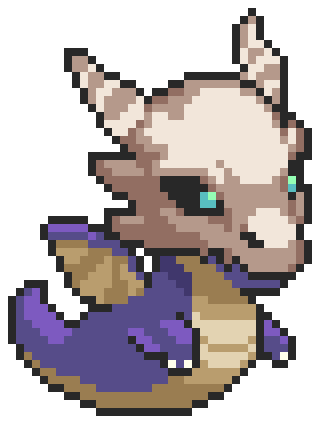
#057Kova
DragonLegendary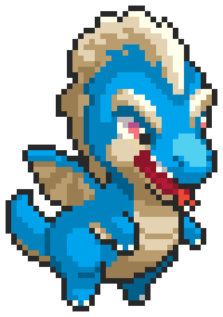
#058Ondi
DragonLegendary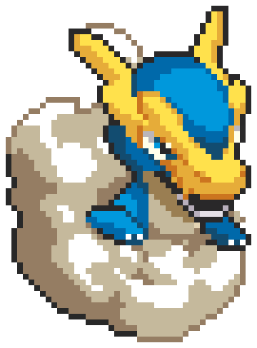
#059Raigo
DragonLegendary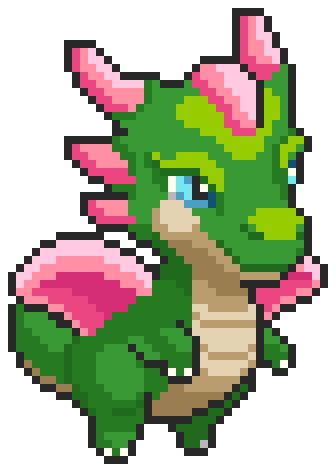
#060Salu
DragonLegendary
Sprites © Thought Farm, from the official dex. Unnamed means the dex gives no name yet, not that the creature has none.
Twelve types, counted
This is the table the whole site has been waiting for, because type locking turns a creature’s type into its job description. For the first time, every revealed Yakkamon has one.
| Type | Species | Common / Rare / Legendary | Dex numbers | Named |
|---|---|---|---|---|
| Normal | 5 | 5 / 0 / 0 | #001, #007, #015, #023, #031 | — |
| Grass | 5 | 4 / 1 / 0 | #002, #008, #016, #024, #038 | — |
| Water | 4 | 4 / 0 / 0 | #003, #009, #017, #025 | — |
| Fire | 4 | 3 / 1 / 0 | #004, #010, #018, #036 | Brazito |
| Rock | 5 | 4 / 1 / 0 | #005, #011, #019, #027, #039 | — |
| Wind | 1 | 1 / 0 / 0 | #006 | — |
| Electric | 1 | 1 / 0 / 0 | #013 | — |
| Bug | 4 | 3 / 1 / 0 | #014, #022, #030, #042 | — |
| Psychic | 3 | 0 / 2 / 1 | #049, #053, #056 | Malandrix |
| Spirit | 1 | 0 / 1 / 0 | #054 | — |
| Dark | 1 | 0 / 1 / 0 | #055 | — |
| Dragon | 4 | 0 / 0 / 4 | #057, #058, #059, #060 | Kova, Ondi, Raigo, Salu |
Three things stand out. Grass, Normal and Rock are the deep benches — five species each — which matters because Grass is the type that regenerates nodes and the only type that can carry the Propagate skill at release (Growth Tiers, Archetypes & Skill Pools). Wind and Electric have one Common each and nothing above, so whatever resources those types unlock will be gated behind a single species until the hidden slots fill. And Spirit and Dark exist only as Rares: if a resource is locked to either, there is no Common way in. The one type the team counted but the dex does not yet show is anyone’s guess.
Three labels, not four
The dex uses three rarities — Common, Rare, Legendary — where the Genesis NFTs used four, adding Uncommon for Brazito. That is why the dex has Brazito at Rare: it has no Uncommon shelf to put him on. We keep the NFT’s label because the NFT is what 10,316 trainers are holding, and because the site’s rarity guide is built on the four-tier Genesis set. If the game itself shows three tiers at launch, this is the first thing we will revisit.
The Rare shelf is bigger than anyone knew: eight species, where the Genesis eggs held only Malandrix. A Grass Rare, a Rock Rare, a Bug Rare, a second Psychic beside Malandrix, the only Spirit and the only Dark, plus Brazito under the dex’s label. Rares are SFTs and tradable; the Genesis collection and the trainer airdrop between them distribute only Malandrix, so the other six must arrive through hunting, Chapter 0 or later events. That is new, and the team has not said how.
And there is a fifth Legendary. #056 is a Psychic type, drawn as a pink-maned creature with a serene face, sitting in the dex directly before the four dragons. It was not in the Genesis eggs — all 68 Legendaries there were dragons — and it is not in the trainer airdrop. The site’s Genesis Legendaries entry is about the four; this one is the first Legendary outside that set, and nothing is known about its ability or how it is obtained.
What the gaps say
The dex numbers are not random. The first six entries run Normal, Grass, Water, Fire, Rock, Wind; the next run Normal, Grass, Water, Fire, Rock and then skip #012; #013 is Electric, #014 Bug, and the cycle starts again at #015 with Normal. Read the ten Common gaps against that cycle and seven of them fall where a Wind, Electric or Fire entry would sit — which is also where the type table is thinnest. The other three (#032, #033, #035) look like the Grass, Water and Rock of an unfinished sixth cycle.
What it changes on this site
- The roster is a grid now, not a picture. The Gameplay page and the field guide carry all 38 with number, type and rarity; the old 26-portrait sheet is retired.
- Type locking has a planning table. Which types are deep, which are single-species, and which exist only as Rares — above, and in the quick reference.
- “Thirteen types, seven named” becomes twelve named. Normal, Rock, Wind, Bug and Dark had never been confirmed before this dex.
- The chatbot knows the dex. Ask it for a type’s species or a dex number.
What it does not tell you
Names for 32 creatures. Any stat, growth tier, archetype or leveling type — the dex is a catalog, not a stat sheet, and the team has said unique stats come in a reveal closer to launch. Utilities for anything below Legendary, which are rolled at generation anyway. Which of the 38 are in the early-access build: the September 17 stream said thirty, and the dex does not say which thirty. The type chart — what beats what — which is still unpublished (The Battle System). And why the Yakkapedia and the NFT disagree about Brazito.
We will fill the names in as they land. Until then: thirty-eight creatures, twelve types, five Legendaries, and a dex that is three-fifths full.